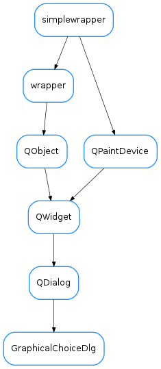

GraphicalChoiceDlg¶

-
class
GraphicalChoiceDlg(parent=None, designMode=False, choices=None, pixmaps=None, iconSize=128, defaultPixmap=None, horizontalScrollBarPolicy=0, verticalScrollBarPolicy=0)[source]¶ Bases:
PyQt4.QtGui.QDialogA generic dialog for choosing among a set of choices which are presented as an array of, each with a given pixmap.
The
getChoice()static method is provided for convenience so that the dialog can be invoked wit a single line:chosen,ok = GraphicalChoiceDlg.getChoice(parent, title, msg, choices, pixmaps, size, defpixmap, horizontalScrollBarPolicy, verticalScrollBarPolicy)
-
static
getChoice(parent=None, title='', msg='', choices=None, pixmaps=None, iconSize=128, defaultPixmap=None, horizontalScrollBarPolicy=0, verticalScrollBarPolicy=0)[source]¶ Static method which launches a GraphicalChoiceDlg with the given options and returns the result
Parameters: - parent (
QWidget) – The parent of the dialog (it will be centered on it) - title (
str) – the text which is displayed in the title bar of the dialog - msg (
str) – the text which is shown to the user in the dialog, above the choices. - choices (
list<list>) – a list of lists of strings to be used as choices names. The (possibly sparse) 2D array defined by the nested lists will be used to present the choices in a grid. The choice names will be used as keys for pixmaps - pixmaps (
dict<str,QPixmap>) – dictionary mapping the choices text to corresponding pixmap. If no valid pixmap is provided for a given choice, the defaultPixmap will be used - iconSize (
int) – size of the icons to be displayed (128px by default) - defaultPixmap (
QPixmap) – Default Pixmap to use if none passed for a given choice. No Pixmap will be used if None passed. - horizontalScrollBarPolicy (
ScrollBarPolicy) – defines the mode of the horizontal scroll bar. The default mode is ScrollBarAsNeeded. - verticalScrollBarPolicy (
ScrollBarPolicy) – defines the mode of the vertical scroll bar. The default mode is ScrollBarAsNeeded
Return type: Returns: A tuple containing choice,ok. choice is the name of the chosen option. ok is true if the user pressed OK and false if the user pressed Cancel.
- parent (
-
static